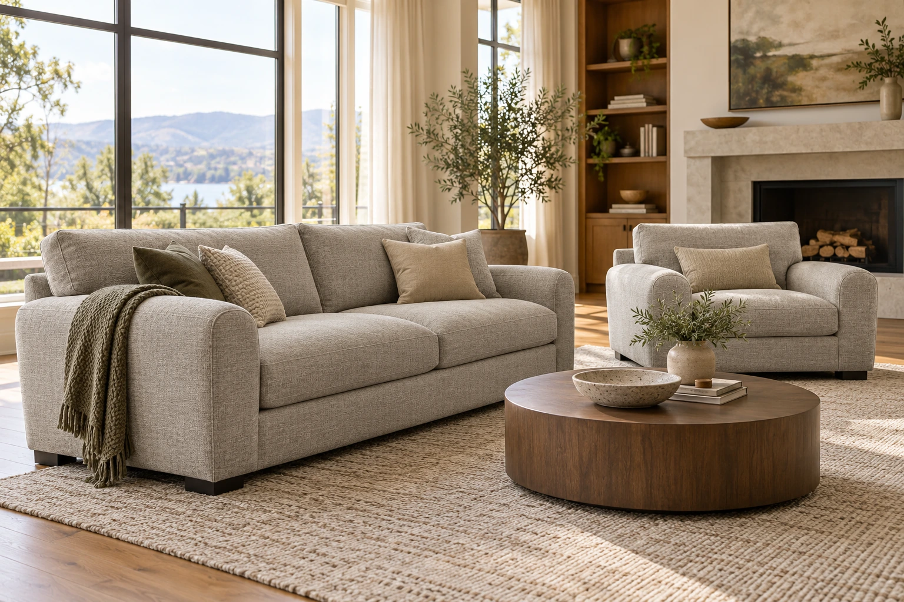

03 / МЕБЕЛЬ И ТЕКСТИЛЬ ДЛЯ ОТЕЛЕЙ
Ваша модельНаш пошив
Чехлы и элементы обивки для домашней, офисной мебели и мебели для ресторанов. Обивка для кроватей, чехлы для матрасов и постельное бельё для отелей.
Выберите категорию мебели или подраздел для отелей.
Готовим образец…
УЮТ В ДЕТАЛЯХ
Пошив под вашу модель
Разрабатываем лекала, подбираем материалы, выполняем раскрой и пошив чехлов и деталей обивки. Учитываем форму вашей модели, чтобы текстильная часть поддерживала её дизайн.
БАЗОВАЯ ОБИВКАСветлый серыйВыраженное тканевое плетение
ТЕКСТИЛЬНЫЕ ЭЛЕМЕНТЫ
- Спинки и подушки
- Сиденья
- Подлокотники
АКЦЕНТЫ ДЛЯ ВАШЕЙ КОЛЛЕКЦИИ
От замысла модели до готовых деталей
Выберите категорию и нажмите на кружочки на изображении или карточки под ним, чтобы рассмотреть детали.